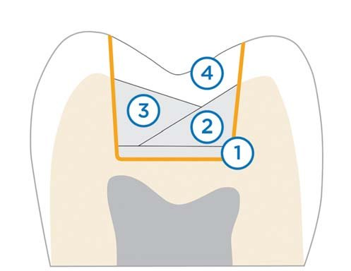
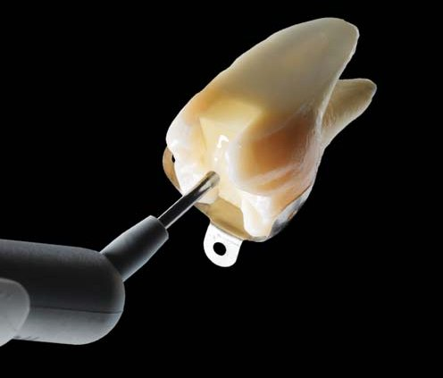
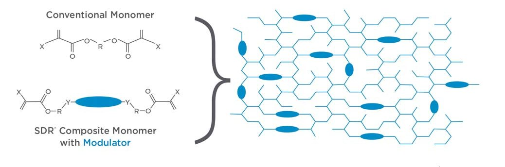
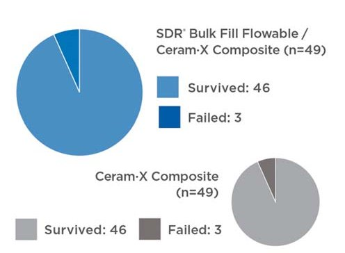
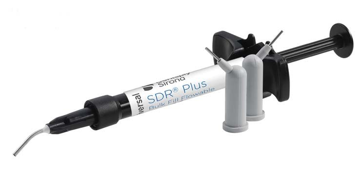

Матеріали Дентсплай Сірона · журнал «ДентАрт» 2024 №2
Геймченджери для композитних реставрацій бічних зубів
The Game Changer for Posterior Composite Restorations
За останні 40 років композитні матеріали значно випередили амальгаму в клінічному застосуванні завдяки попиту на більш естетичні реставрації в усьому світі. Крім того, занепокоєння впливом амальгами на екологію призвело до зменшення та навіть заборони її використання у багатьох країнах, і зрештою використання амальгами може бути припинене у відповідь на Мінаматську конвенцію про ртуть.
Однак у нещодавньому систематичному огляді було зроблено висновок, що реставрації з композитного матеріалу мають приблизно вдвічі більший відсоток невдач, ніж реставрації з амальгами. Здається, що сколи реставрацій не є частими при виконанні реставрацій з композитного матеріалу, але ризик розвитку вторинного карієсу значно вищий. Основні питання при оцінці етіології невдач полягають у тому, чому при роботі з композитом більше невдач, ніж з амальгамою, і які причини частих випадків рецидиву карієсу.
Виробники стоматологічних матеріалів доклали зусиль, щоб вирішити ці питання, поліпшивши склад наповнювачів, фотоініціацію та механічні властивості для покращення стійкості до зносу та довговічності.3,4 Процес фотополімеризації має наслідком те, що мономери композиту з'єднуються разом, утворюючи більші молекули, що називаються полімерами, які також з'єднуються разом, утворюючи безперервну мережу. Однак композит швидко стискається через цей вільнорадикальний процес, що призводить до об'ємної усадки в діапазоні 2–6 % залежно від типу композиту, який використовується. Коли вносять композитний матеріал у глибоко відпрепаровану порожнину після адгезивного протоколу і піддають фотополімеризації, він має обмежену здатність до розслаблення і текучості, створюючи напругу всередині матеріалу, а також на межі реставрація – зуб, що може призвести до дебондингу, коли напруга усадки є більшою за міцність зчеплення адгезиву. Крім того, ці навантаження можуть тривати і пошкоджувати межу з'єднання реставрації й адгезиву під час жувальної функції.5 Наслідком є велика кількість клінічних ускладнень, включаючи дилятацію горбиків, розтріскування емалі та утворення крайового розшарування, що призводить до більшої колонізації бактерій, вторинного або рецидивуючого карієсу, післяопераційної чутливості, запалення пульпи і швидкої невдачі.6
Загальною гіпотезою протягом багатьох років було те, що під час фотополімеризації композит притягується до світла.5,7,8 Проте додаткові дослідження протягом багатьох років засвідчили, що напрямок є результатом крайових умов або співвідношення пов'язаних і вільних стінок порожнини (С-фактор) і менше залежить від напрямку до світла. Виходячи зі складнощів полімеризаційної усадки, були запропоновані різні підходи до внесення композиту для покращення результатів. Різні протоколи світлової полімеризації, такі як м'який старт, обмежене затвердіння та затримка імпульсу, мають недостатні клінічні докази, що свідчать про кращі результати порівняно зі звичайними протоколами для світлової полімеризації.5
Коли з'явилися текучі композити першого покоління, то, рекламуючи їх, припускали, що їхня низька в'язкість забезпечить кращу адаптацію до дентину і допоможе зменшити ефект усадки на основі низького модуля еластичності. Однак їхня підвищена об'ємна усадка через низький вміст наповнювача та слабкі механічні властивості призвели до несприятливих клінічних результатів порівняно з існуючими альтернативами.9 Було представлено кілька протоколів покрокового внесення композиту, щоб зменшити вплив С-фактора шляхом зменшення кількості стінок порожнини, що контактують з композитом, і потенційно дозволити більше навантаження на композит. Однак, залежно від застосованого протоколу, методика покрокового внесення матеріалу може і не зменшити полімеризаційне навантаження на зуб.10 Іншим недоліком покрокового внесення матеріалу чотирма або більше порціями є збільшення затрат часу на виконання процедури. Якщо не застосовувати рабердам, зростає вірогідність помилок, виконана реставрація стає більш вразливою, менш ефективною та менш надійною.

Рис. 1. Ілюстрація традиційного підходу пошарового внесення матеріалу при виконанні композитних реставрацій у бічних зубах. Початковий шар текучого композиту як лайнера (1), два шари універсального композиту трикутної форми, що спрямовано на максимізацію кількості незв'язаної композитної поверхні для зменшення напруги усадки, білд-ап (2+3) та відбудова оклюзійної поверхні (4).
Щоб відповісти на цей процедурний ризик, наприкінці 1990-х років виробники стоматологічних матеріалів почали впроваджувати композитні матеріали для об'ємного пломбування (наприклад, Surefil Composite від Dentsply Sirona), щоб пришвидшити тривалість процедури покрокового внесення матеріалу і затвердіння шляхом модифікації напівпрозорості та фотоініціаторів, що забезпечить затвердіння матеріалу на більшій глибині і дозволить внесення більших порцій. Щоб контролювати усадку та накопичення напруги, матеріали SDR® Bulk Fill мають високий вміст наповнювача, що дозволяє мінімізувати об'ємну усадку, і, отже, вимога до лікаря-стоматолога – упаковувати матеріал у порожнину для створення необхідної адаптації.
Констатовано, що новіші матеріали цієї категорії композитів SDR® Bulk Fill, які можна адаптувати/моделювати, дозволено порційно вносити до 5 мм.11,12 Ці композити мають менший стрес усадки при полімеризації за рахунок зменшення кількості наповнювача або збільшення розміру часточок наповнювача та включення модифікаторів напруги. Однак з 2009 року композити SDR® Bulk Fill були розділені на дві групи на основі в'язкості. На додаток до матеріалів SDR® Bulk Fill з високою в'язкістю, які можна адаптувати/моделювати, як нова категорія матеріалів з'явилися матеріали SDR® Bulk Fill з низькою в'язкістю, або текучі матеріали з меншим вмістом наповнювача та слабшими механічними властивостями. Ці матеріали зазвичай використовуються для відновлення шару дентину, на додаток потрібен шар емалі товщиною лише 2 мм зі звичайного композиту.12 Полімеризаційна усадка та напруга полімеризаційної усадки обох типів композитів SDR® Bulk Fill були проаналізовані і порівняні в кількох дослідженнях.11,13-23 Те, що помітно виділялося в усіх згаданих дослідженнях, полягало в тому, що матеріал SDR® Bulk Fill Flowable Composite мав найнижчий полімеризаційний стрес усадки.
Що таке текучий композит SDR Bulk Fill і чому він має найнижчий полімеризаційний стрес усадки?
За словами виробника, SDR® Bulk Fill Flowable Composite у всіх своїх різноманітних марках по всьому світу (SDR® flow+, SDR® Plus і SDR® Bulk Fill Flowable Composite) є однокомпонентним рентгеноконтрастним композитним матеріалом, який містить фтор, полімеризується у видимому світлі. SDR® Bulk Fill Flowable Composite має характерні ознаки текучого композиту, проте його можна порційно вносити на 4 мм з мінімальним стресом полімеризації. SDR® Bulk Fill Flowable Composite має функцію самовирівнювання, яка забезпечує гарну адаптацію до сформованих стінок порожнини. При використанні як базового матеріалу/лайнера в реставраціях Класу І та Класу II призначений для покриття універсальним композитом на основі метакрилату для відновлення відсутнього оклюзійного/вестибулярного шару емалі. Він також підходить як самостійний реставраційний матеріал при виконанні консервативних реставрацій Класу І, Класів III та V, без додаткового перекриття наноситься зверху. Для забезпечення естетичного вигляду реставрацій Класів III і V діапазон відтінків розширено відтінками А1, А2 і А3 на додаток до універсального відтінку.

Рис. 2. Заповнення SDR® Plus Bulk Fill Flowable Composite на розрізі зуба ілюструє чудову адаптацію матеріалу в проксимальному відділі та до стінок порожнини.
Текуча технологія SDR® Bulk Fill має запатентовану структуру уретандиметакрилату (UDMA), що дає об'ємну усадку лише на 3,5 %, тому матеріал SDR® Bulk Fill має найнижчу межу загальної усадки порівняно з іншими текучими композитами. Незважаючи на те, що менша об'ємна усадка сприяє загальному зниженню полімеризаційного стресу, ключовим аспектом для зменшення стресу полімеризації є запатентована, а отже унікальна структура UDMA. Порівняно зі звичайними композитними системами, SDR® Bulk Fill Flowable Composite утворює великі молекулярні структури під час полімеризації, які, за словами виробника, містять хімічну частину, що називається «модулятором полімеризації». Висока молекулярна маса та конформаційна гнучкість навколо центрованого модулятора надають оптимізовану гнучкість і мережевну структуру SDR® Bulk Fill Flowable Composite. Текуча технологія композиту SDR® Bulk Fill здатна розсіювати більше енергії під час полімеризації, тим самим зменшуючи напругу усадки.

Рис. 3. Ілюстрація текучого композитного мономеру SDR® Bulk Fill з молекулярною масою 849 г/моль порівняно з 513 г/моль для звичайного BisGMA та модулятора. Висока молекулярна маса і конформаційна гнучкість навколо центрованого модулятора надають оптимізовану гнучкість і мережевну структуру SDR® Bulk Fill Flowable Composite.
Як наслідок, SDR® Bulk Fill Flowable Composite забезпечує приблизно 20 % зниження об'ємної усадки та майже 80 % зниження полімеризаційного стресу порівняно зі звичайними метакрилатними композитами. Порівняно з оригінальним хімічним складом, композитна матриця і наповнювальна паста були модифіковані в доступних на даний момент продуктах SDR® Bulk Fill (SDR® flow+ / SDR® Plus). Вміст наповнювача було збільшено на 2,5 % для зміцнення матеріалу, покращення його рентгеноконтрастності та зносостійкості. Попередній скляний наповнювач частково замінений альтернативним наповнювачем, який забезпечує більшу міцність. Композитну основу також було змінено, щоб адаптувати загальну консистенцію нового наповнювача та зберегти текучість і самовирівнювання, що є ключовими характеристиками текучого композиту SDR® Bulk Fill. Запатентовані, а отже унікальні характеристики першого покоління SDR® Bulk Fill Flowable Material були збережені, на додаток з'явилася підвищена зносостійкість до рівня стандартних текучих композитів та покращилася рентгеноконтрастність приблизно на 20 % – до 2,6 мм Al.
Як працює SDR Bulk Fill Flowable, перевіряли в дослідженнях in vitro та клінічних випробуваннях
На початку вивчення текучого композиту SDR® Bulk Fill кілька досліджень продемонстрували його здатність добре з'єднуватися з дном порожнини у реставраціях з високим С-фактором із товщиною порції 4 мм.24-26 Для прямих композитних реставрацій на бічних зубах Класу ІІ метою клініциста є застосування матеріалів, які зменшують полімеризаційну усадку та полімеризаційний стрес і ефективно працюють на емалі, а також є ефективними при виконанні реставрацій у проксимальних глибоких порожнинах, де дентин і цемент стають основними проблемами. Тому тип композитного матеріалу, що використовується для відновлення проксимального дефекту, може відігравати вирішальну роль у крайовій адаптації в композитній реставрації Класу ІІ на бічних зубах.
Використання SDR® Bulk Fill Flowable у техніці відкритого сендвіча для виконання композитної реставрації Класу ІІ на бічних зубах дозволяє вносити шар матеріалу як заміну дентину, що тягнеться від дна ясенної частини порожнини на 4 мм. З останнім шаром або шаром емалі товщиною принаймні 2 мм усі проксимальні краї, що відкрито контактують із порожниною рота, герметизуються, що має першочергове значення для довгострокового клінічного успіху.
Для досліджень in vitro були запроваджені нові технології оцінки крайової адаптації різних типів композитів у реставраціях Класів І і ІІ. Мікрокомп'ютерна томографія (μ-CT) дозволяє робити безпечну оцінку реставраційної поверхні у двох і трьох вимірах, а також може виміряти об'ємно в мікронах крайову цілісність і внутрішню адаптацію реставраційного матеріалу, що досліджується.8,19,27 Нещодавнє дослідження28 оцінювало три композитні матеріали для однопорційного внесення: SDR® Bulk Fill Flowable, 3M™ Filtek™ One Bulk Fill† і Tetric® N-Ceram Bulk Fill† порівняно зі звичайним композитним матеріалом Filtek™ Z350† у молярах пацієнта без карієсу та без тріщин, відпрепарованих для MOD реставрації. Зуби піддавалися термоциклічному і циклічному навантаженню, щоб імітувати зношування та оклюзійний стрес у ротовій порожнині під час функціонування. Мікро-КТ28 було зроблено на кожному зразку для вимірювання міжфазного розриву на реставраційній межі. Результати продемонстрували, що SDR® Bulk Fill Flowable мав найменший об'єм розриву серед усіх протестованих композитних матеріалів.
Додаткове дослідження in vitro Micro-КT19 на реставраціях Класу І дійшло висновку, що SDR® Bulk Fill Flowable має менш об'ємну полімеризаційну усадку порівняно з іншими групами текучих композитів – Permaflo™†, Filtek™ Bulk fill flow† і Vertise™ flow†.
Оптична когерентна томографія зі змінним джерелом (SS-OCT) – ще одна технологія in vitro, розроблена для візуалізації того, як композити поводяться під час світлової полімеризації, з використанням відео в реальному часі. Два дослідження29,30 засвідчили, що SDR® Bulk Fill Flowable мав нижчу швидкість полімеризації, а відстрочена гелеподібна точка полімерної матриці збільшує її текучу здатність, про що свідчить менша кількість пустот і краща адаптація внутрішнього дентину на глибині 2 мм і 4 мм порівняно зі звичайним текучим композитом.
Інше дослідження SS-OCT31 продемонструвало, що SDR® Bulk Fill Flowable мав низький рівень усадки, що робить його ідеальним для використання як заміну проміжного шару дентину для кращої внутрішньої адаптації порівняно з іншими наповненими композитами.
Дослідження біосумісності32 засвідчило, що лише SDR® Bulk Fill Flowable та ще один композитний матеріал з об'ємним наповненням продемонстрували виживання клітин вище 70 % з товщиною порції 4 мм, у той час як два стандартні композити, два склоіономерні композити з попередньою реакцією з об'ємним наповненням і один інший композит з об'ємним наповненням продемонстрували нижче виживання клітин.
У дослідженнях, що оцінюють ступінь перетворення та глибину затвердіння композитів, що твердіють за допомогою світла, SDR® Bulk Fill Flowable показав значно вищий ступінь перетворення на дні та на поверхні, ніж інші протестовані композити. У нього коротший час затвердіння (10 с), значно скорочена полімеризація, ніж у Filtek™ Bulk Fill† і x-tra base†. SDR® Bulk Fill Flowable продемонстрував високий рівень полімеризації у порціях товщиною 4 мм з досягненням такого ступеня полімеризації, як композитних шарів товщиною 2 мм.
SDR® Bulk Fill Flowable за час світлової полімеризації, який зазначений виробником, правильно заполімеризувався у 4 мм. Вища випромінююча експозиція SDR® Bulk Fill Flowable не має негативного впливу на його полімеризаційну усадку. Текучі наповнені композити, такі як SDR® Bulk Fill Flowable, показали кращі результати щодо ефективності полімеризації за 10 с порівняно з високов'язкими наповненими композитами, такими як SonicFill™†, для яких потрібно 20 с.33-36
Дослідники змогли відтворити ці результати у 5-річному рандомізованому контрольованому дослідженні,45 в якому слідували аналогічному протоколу із 38 парами реставрацій Класу І та 62 парами реставрацій Класу II (перша реставрація з порційним внесенням 4 мм SDR® Bulk Fill Flowable Composite + наногібридний фотополімерний композит, друга реставрація з наногібридним композитом з порційним внесенням 2 мм), встановлених 86 пацієнтам. Через 5 років можна було оцінити 68 реставрацій Класу І та 115 реставрацій Класу ІІ. Десять реставрацій виявилися невдалими, причому причина невдачі чотирьох була в SDR® Bulk Fill Flowable Composite, а решти шести у контрольній групі – через сколи композиту та вторинний карієс, що призвело до показника успіху 94,5 % для всіх реставрацій і річного коефіцієнта невдач (AFR) 1,1 % для групи реставрацій SDR® Bulk Fill Flowable та 1,3 % для контрольної групи.
Клінічні випробування композитів у реставрації Класу ІІ на бічних зубах з використанням SDR® Bulk Fill Flowable для одномоментного внесення проведені як у ретроспективній, так і в рандомізованій контрольованій методології. Недавнє ретроспективне дослідження37 SDR® Bulk Fill Flowable, який використовується у два кроки як шар дентину 4 мм з шаром звичайного композиту як шаром емалі 2 мм, порівняно зі звичайним композитом, що використовується одним кроком у 3–2 мм, засвідчило, що група SDR® Bulk Fill Flowable працює довше 3-річного періоду. Автори зробили висновок, що використання SDR® Bulk Fill Flowable може скоротити час процедури реставрації бічних зубів композитними матеріалами порівняно зі звичайними композитами та розширеними поступовими техніками.
Результати 4-річних рандомізованих проспективних досліджень у «split-mouth» дизайні, присвячених оцінці текучих композитів об'ємного наповнення для відновлення дефектів Класу ІІ у бічних зубах у порівнянні з традиційним мікрогібридним композитом (Amelogen Plus†, Ultradent†), текучого нанонаповненого композиту об'ємного наповнення (Filtek™ Bulk Fill Flow† + Filtek™ Z350XT†, 3M™/Espe†) і мікрогібридного текучого композиту об'ємного наповнення (SDR® Bulk Fill Flowable + TPH®3 Composite, Dentsply), засвідчили, що група композитів SDR® Bulk Fill Flowable/TPH®3 мала кращі характеристики зношування та поверхневого профарбовування порівняно з іншими групами.38
У 6-річному рандомізованому контрольованому дослідженні39 оцінювали техніку одномоментного заповнення всього дефекту текучим композитом при реставрації бічних зубів і порівняли її зі звичайною технікою нанесення шарів 2 мм композиту для композитних реставрацій Класів І і ІІ для бічних зубів. 38 пар реставрацій Класу II і 15 пар реставрацій Класу I були встановлені 38 дорослим.
Перший дефект кожної пари заповнювали текучим фотополімерним композитом (SDR® Bulk Fill Flowable) порційно до 4 мм. Оклюзійна поверхня виконана шаром наногібридного фотополімерного композиту. Другий дефект кожної пари відновлювали гібридним фотополімерним композитом порційно 2 мм. Через 6 років можна було оцінити 72 реставрації Класу II і 26 реставрацій Класу І. Спостерігалося шість невдалих реставрацій молярів Класу II, по три в кожній групі, що призвело до показника успіху 93,9 % для всіх реставрацій і річного коефіцієнта невдач (AFR) 1,0 % для обох груп. Основною причиною невдач були сколи композитного матеріалу, а не вторинний карієс.

Рис. 4. Показники 6-річної експлуатації реставрацій Класів І і II, виконаних SDR® Plus Bulk Fill Flowable з універсальним композитом (Ceram•X® Nano Ceramic Restorative, Dentsply Sirona) у порівнянні з багатошаровими реставраціями у тих самих пацієнтів із використанням універсального композиту (Ceram•X® Nano Ceramic Restorative, Dentsply Sirona).
Висновки
Розроблені у 2009 році текучі композити SDR® Bulk Fill з технологією SDR® Bulk Fill Flowable Composite стали першими композитами, які можна порційно вносити 4 мм у текучому стані. На сьогодні підтверджено, що SDR® Bulk Fill Flowable Composite зарекомендував себе як найважливіша розробка в технології композитних матеріалів та змінив правила виконання композитних реставрацій у бічних ділянках. Успіх композитної реставрації Класу ІІ залежить від розміщення матеріалу в найтоншій зоні реставрації, ясенній ділянці. Розміщення SDR® Bulk Fill Flowable Composite не тільки герметизує ясенний край краще, ніж традиційні та інші композити SDR® Bulk Fill, але в поєднанні лише з однією-двома збільшеними порціями верхнього шару емалі наногібридного композиту може пришвидшити техніку виконання процедури в ротовій порожнині порівняно з традиційними протоколами з кількома малими порціями.40 Склоіномери та модифіковані фотополімерні склоіономери, що використовуються для відбудови шару дентину або для виконання SDR® Bulk Fill реставрації, у відповідності з нещодавнім систематичним оглядом та мета-аналізом, не продемонстрували успіху в клінічних випробуваннях.41 Сучасні фотополімерні композити не розроблені для вивільнення значних кількостей кальцію, фосфору та фториду, які могли б бути застосовані для біоактивності дентину та емалі. Крім того, немає достатніх наукових доказів про використання композитного матеріалу, що свідчать про біоремінералізацію поверхні реставрації на основі досліджень in vitro, спонсорованих компанією.42 Останні незалежні клінічні випробування цих стоматологічних матеріалів не показали надійних результатів.43,44 Багато матеріалів намагалися імітувати SDR® Bulk Fill Flowable Composite, але жоден інший стоматологічний матеріал не досліджувався настільки широко або ніколи не повторював успішні клінічні результати понад ста мільйонів реставрацій, виконаних з технологією SDR® Bulk Fill Flowable Composite. Дослідження in vitro та клінічні випробування чітко продемонстрували, що жоден інший матеріал, доступний стоматологам у всьому світі, не є кращим, ніж SDR® Bulk Fill Flowable Composite, надійний матеріал для виконання техніки SDR® Bulk Fill для відбудови шару дентину в кожній композитній реставрації.

Література
- Bayne S. C., Ferracane J. L., Marshall G. W., Marshall S. J., van Noort R. The Evolution of Dental Materials over the Past Century: Silver and Gold to Tooth Color and Beyond. J Dent Res. 2019 Mar;98(3):257-265.
- Worthington H. V., Khangura S., Seal K., Mierzwinski-Urban M., Veitz-Keenan A., Sahrmann P., Schmidlin P. R., Davis D., Iheozor-Ejiofor Z., Rasines Alcaraz M. G. Direct composite resin fillings versus amalgam fillings for permanent posterior teeth. Cochrane Database Syst Rev. 2021 Aug 13;8(8):CD005620.
- Bayne S. C, Ferracane J. L., Marshall G. W., Marshall S. J., van Noort R. The Evolution of Dental Materials over the Past Century: Silver and Gold to Tooth Color and Beyond. J Dent Res. 2019 Mar;98(3):257-265.
- Zorzin J., Maier E., Harre S., Fey T., Belli R., Lohbauer U., Petschelt A., Taschner M. Bulk-fill resin composites: polymerization properties and extended light curing. Dent Mater. 2015 Mar;31(3):293-301.
- Ferracane J. L., Hilton T. J. Polymerization stress--is it clinically meaningful? Dent Mater. 2016 Jan;32(1):1-10.
- Demirel G., Baltacioglu I. H., Kolsuz M. E., Ocak M., Bilecenoglu B., Orhan K. Volumetric Cuspal Deflection of Premolars Restored With Different Paste-like Bulk-fill Resin Composites Evaluated by Microcomputed Tomography. Oper Dent. 2020 Mar/Apr;45(2):143-150.
- Versluis A., Tantbiroin D., Douglas W. H. Do dental composites always shrink toward the light? J Dent Res 1998;77:1435-45.
- Van Ende A., Van de Casteele E., Depypere M., De Munck J., Li X., Maes F., Wevers M., Van Meerbeek B. 3D volumetric displacement and strain analysis of composite polymerization. Dent Mater. 2015 Apr;31(4):453-61.
- Rosatto C. M., Bicalho A. A., Verissimo C., Braganca G. F., Rodrigues M. P., Tantbirojn D., Versluis A., Soares C. J. Mechanical properties, shrinkage stress, cuspal strain and fracture resistance of molars restored with bulk-fill composites and incremental filling technique. J Dent. 2015 Dec;43(12):1519-28.
- Bicalho A. A., Valdivia A. D., Barreto B. C., Tantbirojn D., Versluis A., Soares C. J. Incremental filling technique and composite material--part II: shrinkage and shrinkage stresses. Oper Dent. 2014 Mar-Apr;39(2):E83-92.
- Kim R. J., Kim Y. J., Choi N. S., Lee I. B. Polymerization shrinkage, modulus, and shrinkage stress related to tooth-restoration interfacial debonding in bulk-fill composites. J Dent. 2015 Apr;43(4):430-9.
- Kaisarly D., Langenegger R., Litzenburger F., Heck K., El Gezawi M., Rosch P., Kunzelmann K. H. Effects of application method on shrinkage vectors and volumetric shrinkage of bulk-fill composites in class-II restorations. Dent Mater. 2022 Jan;38(1):79-93.
- Rizzante F. A. P., Mondelli R. F. L., Furuse A. Y., Borges A. F. S., Mendonca G., Ishikiriama S. K. Shrinkage stress and elastic modulus assessment of bulk-fill composites. J Appl Oral Sci. 2019 Jan 7;27:e20180132.
- Cerda-Rizo E. R., de Paula Rodrigues M., Vilela A., Braga S., Oliveira L., Garcia-Silva T. C., Soares C. J. Bonding Interaction and Shrinkage Stress of Low-viscosity Bulk Fill Resin Composites With High-viscosity Bulk Fill or Conventional Resin Composites. Oper Dent. 2019 Nov/Dec;44(6):625-636.
- Ilie N., Hickel R. Investigations on a methacrylate-based flowable composite based on the SDR™ technology. Dent Mater. 2011 Apr;27(4):348-55.
- Marovic D., Taubock T. T., Attin T., Panduric V., Tarle Z. Monomer conversion and shrinkage force kinetics of low-viscosity bulk-fill resin composites. Acta Odontol Scand. 2015 Aug;73(6):474-80.
- Taubock T. T., Jager F., Attin T. Polymerization shrinkage and shrinkage force kinetics of high- and low-viscosity dimethacrylate- and ormocer-based bulk-fill resin composites. Odontology. 2019 Jan;107(1):103-110.
- Kim Y. J., Kim R., Ferracane J. L., Lee I. B. Influence of the Compliance and Layering Method on the Wall Deflection of Simulated Cavities in Bulk-fill Composite Restoration. Oper Dent. 2016 Nov/Dec;41(6):e183-e194.
- Sampaio C. S., Chiu K. J., Farrokhmanesh E., Janal M., Puppin-Rontani R. M., Giannini M., Bonfante E. A., Coelho P. G., Hirata R. Microcomputed Tomography Evaluation of Polymerization Shrinkage of Class I Flowable Resin Composite Restorations. Oper Dent. 2017 Jan/Feb;42(1):E16-E23.
- Fronza B. M., Rueggeberg F. A., Braga R. R., Mogilevych B., Soares L. E., Martin A. A., Ambrosano G., Giannini M. Monomer conversion, microhardness, internal marginal adaptation, and shrinkage stress of bulk-fill resin composites. Dent Mater. 2015 Dec;31(12):1542-51.
- El-Damanhoury H., Platt J. Polymerization shrinkage stress kinetics and related properties of bulk-fill resin composites. Oper Dent. 2014 Jul-Aug;39(4):374-82.
- Han S. H., Sadr A., Shimada Y., Tagami J., Park S. H. Internal adaptation of composite restorations with or without an intermediate layer: Effect of polymerization shrinkage parameters of the layer material. J Dent. 2019 Jan;80:41-48.
- Pereira R., Giorgi M. C. C., Lins R. B. E., Theobaldo J. D., Lima D. A. N. L., Marchi G. M., Aguiar F. H. B. Physical and photoelastic properties of bulk-fill and conventional composites. Clin Cosmet Investig Dent. 2018 Dec 12;10:287-296.
- Van Ende A., De Munck J., Van Landuyt K. L., Poitevin A., Peumans M., Van Meerbeek B. Bulk-filling of high C-factor posterior cavities: effect on adhesion to cavity-bottom dentin. Dent Mater. 2013 Mar;29(3):269-77.
- Al-Harbi F., Kaisarly D., Michna A., ArRejaie A., Bader D., El Gezawi M. Cervical Interfacial Bonding Effectiveness of Class II Bulk Versus Incremental Fill Resin Composite Restorations. Oper Dent. 2015 Nov-Dec;40(6):622-35.
- Shahidi C., Krejci I., Dietschi D. In Vitro Evaluation of Marginal Adaptation of Direct Class II Composite Restorations Made of Different «Low-Shrinkage» Systems. Oper Dent. 2017 May/Jun;42(3):273-283.
- Rizzante F. A. P., Sedky R. A. F., Furuse A. Y., Teich S., Ishikiriama S. K., Mendonca G. Validation of a method of quantifying 3D leakage in dental restorations. J Prosthet Dent. 2020 Jun;123(6):839-844.
- Al Sheikh R. Marginal Adaptation of Different Bulk-fill Composites: A Microcomputed Tomography Evaluation. Oman Med J. 2022 Jan 31;37(1):e339.
- Nazari A., Sadr A., Shimada Y., Tagami J., Sumi Y. 3D assessment of void and gap formation in flowable resin composites using optical coherence tomography. J Adhes Dent. 2013 Jun;15(3):237-43.
- Nazari A., Sadr A., Saghiri M. A., Campillo-Funollet M., Hamba H., Shimada Y., Tagami J., Sumi Y. Non-destructive characterization of voids in six flowable composites using swept-source optical coherence tomography. Dent Mater. 2013 Mar;29(3):278-86.
- Han S. H., Sadr A., Shimada Y., Tagami J., Park S. H. Internal adaptation of composite restorations with or without an intermediate layer: Effect of polymerization shrinkage parameters of the layer material. J Dent. 2019 Jan;80:41-48.
- Toh W. S., Yap A. U., Lim S. Y. In Vitro Biocompatibility of Contemporary Bulk-fill Composites. Oper Dent. 2015 Nov-Dec;40(6):644-52.
- Lempel E., Czibulya Z., Kovacs B., Szalma J., Toth A., Kunsagi-Mate S., Varga Z., Boddi K. Degree of Conversion and BisGMA, TEGDMA, UDMA Elution from Flowable Bulk Fill Composites. Int J Mol Sci. 2016 May 20;17(5):732.
- Zorzin J., Maier E., Harre S., Fey T., Belli R., Lohbauer U., Petschelt A., Taschner M. Bulk-fill resin composites: polymerization properties and extended light curing. Dent Mater. 2015 Mar;31(3):293-301.
- Miletic V., Pongprueksa P., De Munck J., Brooks N. R., Van Meerbeek B. Curing characteristics of flowable and sculptable bulk-fill composites. Clin Oral Investig. 2017 May;21(4):1201-1212.
- Pereira R., Giorgi M. C. C., Lins R. B. E., Theobaldo J. D., Lima D. A. N. L., Marchi G. M., Aguiar F. H. B. Physical and photoelastic properties of bulk-fill and conventional composites. Clin Cosmet Investig Dent. 2018 Dec 12;10:287-296.
- Ugurlu M., Sari F. A 3-year retrospective study of clinical durability of bulk-filled resin composite restorations. Restor Dent Endod. 2021 Dec 30;47(1):e5.
- Endo Hoshino I. A., Fraga Briso A. L., Bueno Esteves L. M., Dos Santos P. H., Meira Borghi Frascino S., Fagundes T. C. Randomized prospective clinical trial of class II restorations using flowable bulk-fill resin composites: 4-year follow-up. Clin Oral Investig. 2022 May 13.
- van Dijken J. W. V., Pallesen U. Bulk-filled posterior resin restorations based on stress-decreasing resin technology: a randomized, controlled 6-year evaluation. Eur J Oral Sci. 2017 Aug;125(4):303-309.
- Sampaio C. S., Garces G. A., Kolakarnprasert N., Atria P. J., Giannini M., Hirata R. External Marginal Gap Evaluation of Different Resin-filling Techniques for Class II Restorations-A Micro-CT and SEM Analysis. Oper Dent. 2020 Jul 1;45(4):E167-E175.
- Vetromilla B. M., Opdam N. J., Leida F. L., Sarkis-Onofre R., Demarco F. F., van der Loo M. P. J., Cenci M. S., Pereira-Cenci T. Treatment options for large posterior restorations: a systematic review and network meta-analysis. J Am Dent Assoc. 2020 Aug;151(8):614-624.e18.
- Vallittu P. K., Boccaccini A. R., Hupa L., Watts D. C. Bioactive dental materials-Do they exist and what does bioactivity mean? Dent Mater. 2018 May;34(5):693-694.
- van Dijken J. W. V., Pallesen U., Benetti A. A randomized controlled evaluation of posterior resin restorations of an altered resin modified glass-ionomer cement with claimed bioactivity. Dent Mater. 2019 Feb;35(2):335-343.
- Balkaya H., Arslan S. A Two-year Clinical Comparison of Three Different Restorative Materials in Class II Cavities. Oper Dent. 2020 Jan/Feb;45(1):E32-E42.
- van Dijken J. W. V., Pallesen U. Posterior bulk-filled resin composite restorations: A 5-year randomized controlled clinical study. J Dent. 2016 Aug;51:29-35.